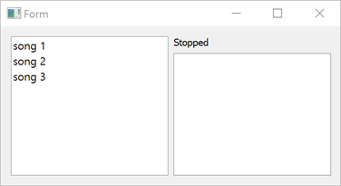

Qt SCXML Media Player QML Example (Dynamic)
A Qt Quick application that sends data to and receives it from a dynamically loaded ECMAScript data model.

Media Player QML Example (Dynamic) demonstrates how to access data from a dynamically loaded ECMAScript data model.
The UI is created using Qt Quick.
Running the Example
To run the example from Qt Creator, open the Welcome mode and select the example from Examples. For more information, visit Building and Running an Example.
Using the ECMAScript Data Model
We specify the data model as a value of the datamodel attribute of the <scxml> element in mediaplayer-common/mediaplayer.scxml:
<scxml
xmlns="http://www.w3.org/2005/07/scxml"
version="1.0"
name="MediaPlayerStateMachine"
initial="stopped"
datamodel="ecmascript"
>
<datamodel>
<data id="media"/>
</datamodel>
Dynamically Loading the State Machine
We link against the Qt SCXML module by adding the following line to the example .pro file:
QT += qml scxml
We dynamically create the state machine in mediaplayer-commonMediaplayer.qml:
import QtScxml 5.8 Window { id: root property StateMachine stateMachine: scxmlLoader.stateMachine property alias source: scxmlLoader.source